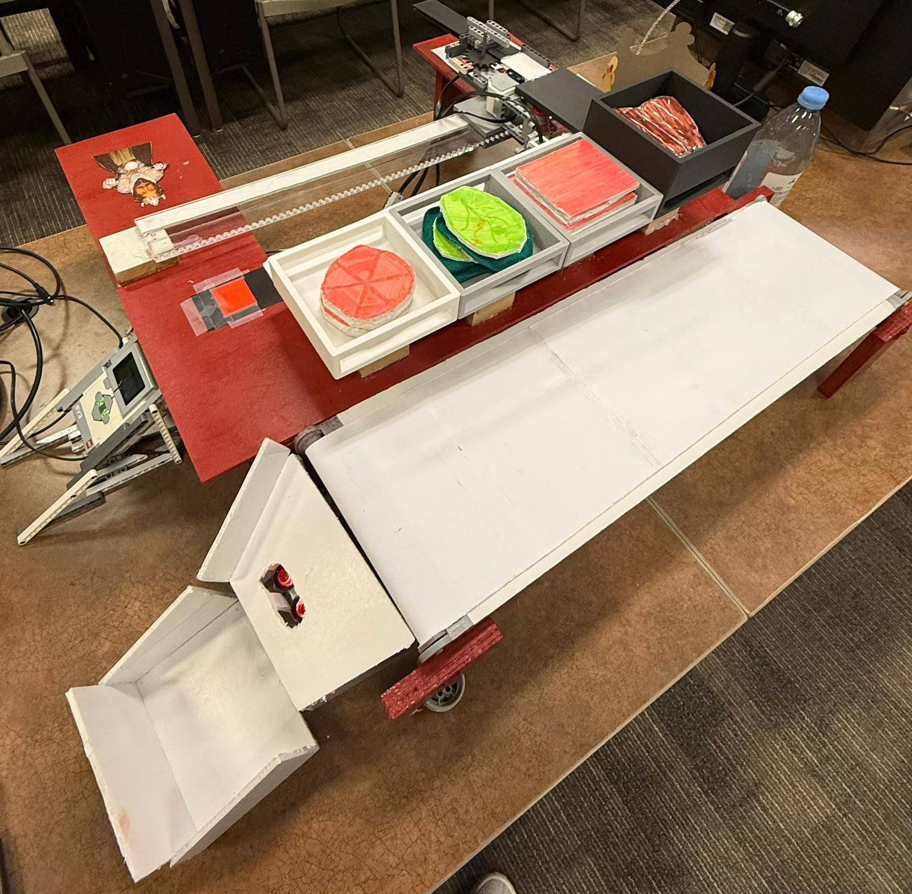
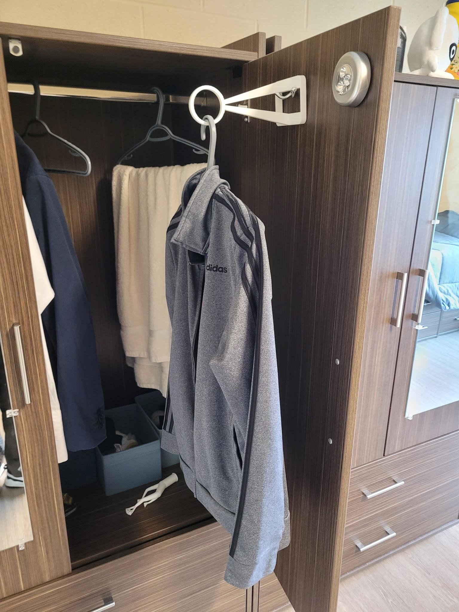
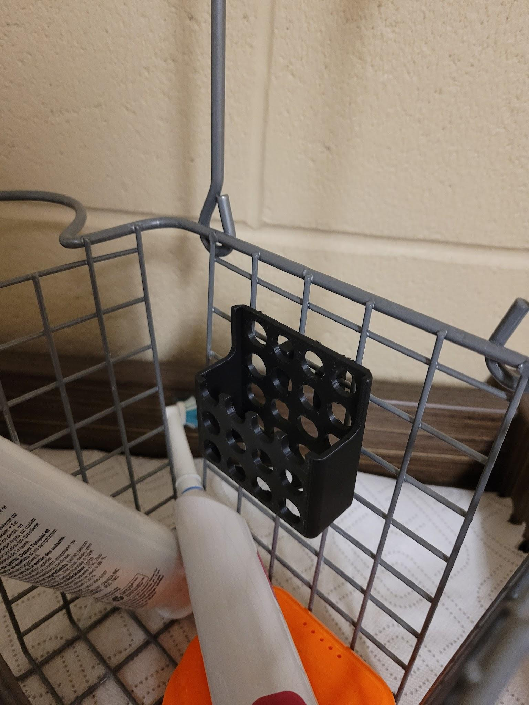
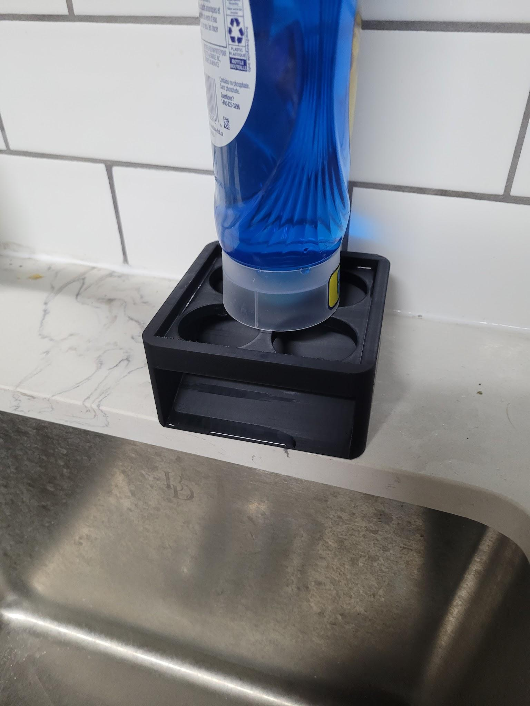
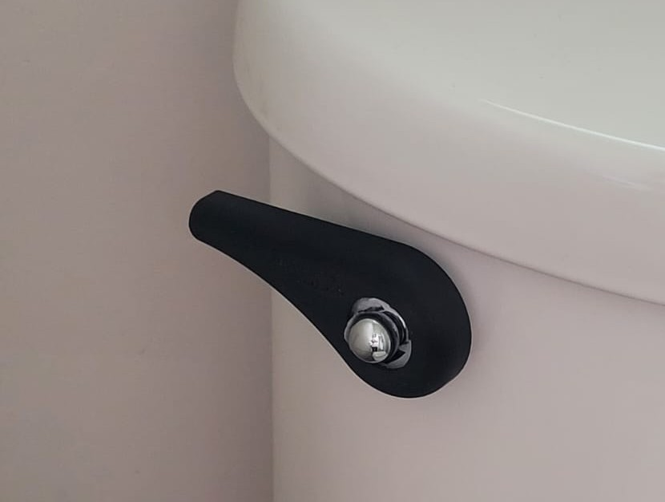
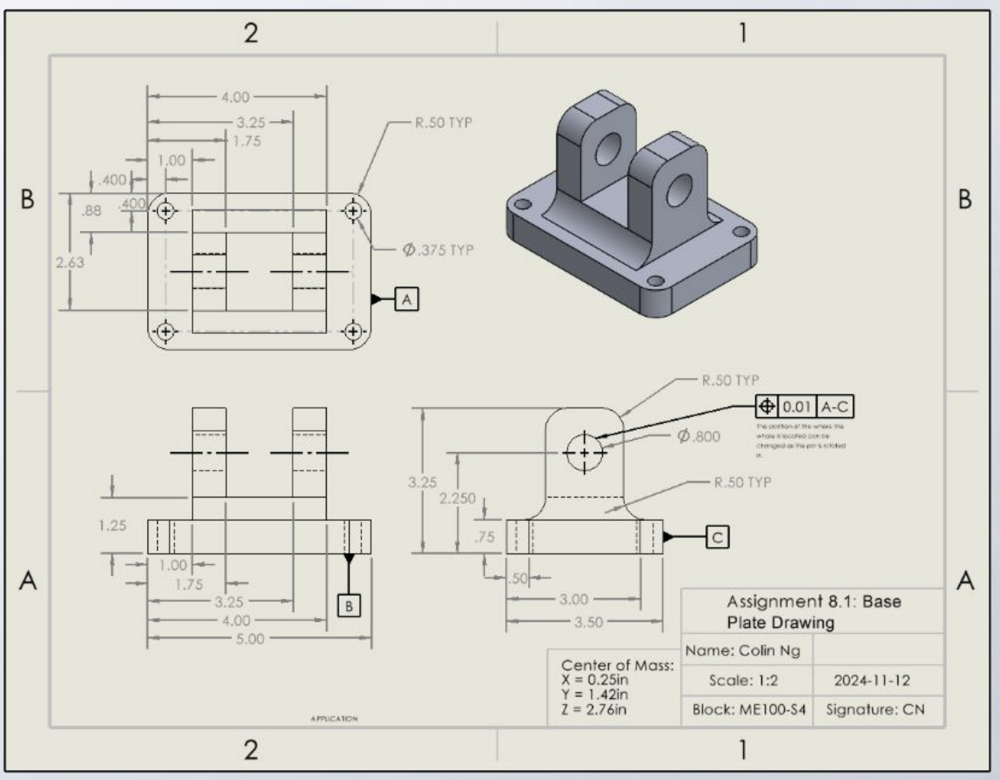

Work I've completed at school or for my own interests.

1
/
2
Prototyping Design
Lego Robot Sandwich Maker
Built a customizable Sandwich Maker from Lego EV3
Robot, wood, 3d printed parts and laser cut acrylic parts.
Laterally moves a pusher that pushes and
moves via 3d printed and laser cut rack
and pinions to move and push the correct ingredient.
Uses a colour sensor to detect location and
programmed to solve for the locations of
specified ingredients.
Programmed in RobotC (similar to C++) with functions
and overlying main program to control the functionality of the robot.
Used 3d printers, power tools, Solidworks, AutoCAD and laser cutter machines.
The machine operated reliably and could perform 100+ push cycles with a 92% success rate.




1
/
4
3D Printing and CAD
3D Printing Projects
Ideated and designed solid objects to assist in everyday problems.
Used Solidworks to CAD the solution and then
used slicing software to account for printing speed, supports and direction.
Created a hook hanger extension that allowed for
clothes to be dried without directly touching the
wall and designed iterations for sizing.
Printed a floss holder that hung on to a mesh
shower caddy with holes via array extrude cuts to allow water to escape.
Designed a dish soap holder that elevated
the stand to allow for extra water and dish
soap from the bottle to drip on a ramp which led back to the sink.
Other prints include:
Coin Holder
Toilet Handle Replacement
Toiletries Shelf

Solidworks Drawing
Robot Arm Clevis Mount Drawing
Designed a Robot Arm Clevis Mount
from text instructions and created
a Solidworks drawing from it.
Used GD&T for holes such that
machining could be done accurately to a degree.
Applied datums for GD&T such that the drawing
could be read by a machinist in a realistic scenario.
Used Baseline Dimensioning rules to dimension part.
I modelled the Robot Arm Clevis Mount in
Solidworks from a text page of instructions
and then made an engineering drawing for machining.
Used Solidworks to model, Solidworks Drawing, GD&T and Baseline Dimension rules.